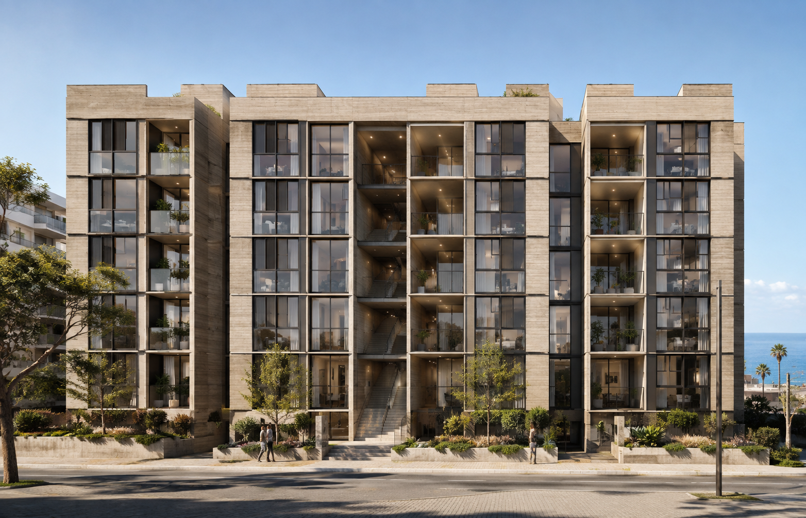
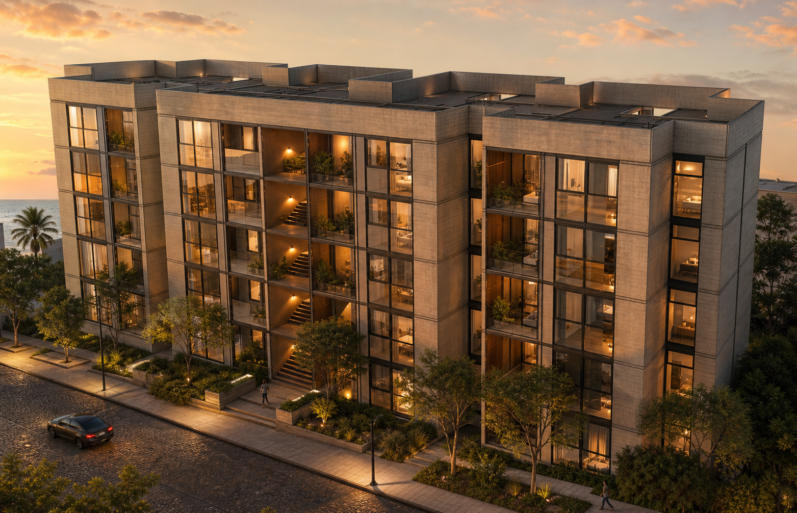
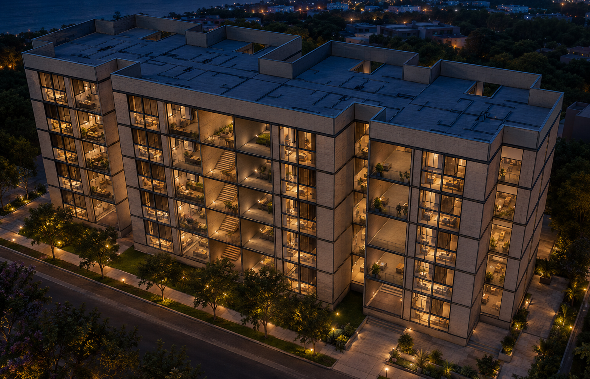

01
Validar distribución
Confirmar programa, accesos y relación entre los bloques.
Por definirDesarrollo conceptual y visualización arquitectónica
El avance reúne una base volumétrica y tres escenas de visualización para orientar la siguiente decisión.
La propuesta permite evaluar imagen, proporción y carácter. No representa avance físico de obra.
El conjunto se compone de cuerpos residenciales conectados, vacíos centrales y una lectura modular de fachada.
Cinco niveles aparentes, por confirmar en la documentación arquitectónica definitiva.
La visualización propone una arquitectura sobria, cálida y conectada con el entorno urbano.
Materialidad propuesta
La fachada frontal hace visible el acceso, la escala peatonal y el carácter residencial del conjunto.

La perspectiva muestra la relación entre volúmenes, la luz cálida y la experiencia de llegar al proyecto.

La vista de dron comunica la volumetría total, las cubiertas y la lectura nocturna del proyecto.
Las escenas permiten revisar el proyecto a distintas horas sin cambiar su lenguaje arquitectónico.
La visualización abre una conversación de diseño. Estas definiciones permiten iniciar una etapa técnica.
Confirmar programa, accesos y relación entre los bloques.
Por definirAlinear el lenguaje visual con el nivel de acabado esperado.
Por definirEstablecer un marco de inversión antes de especificar soluciones.
Por definirLa secuencia siguiente es una propuesta de trabajo, sujeta a alcance, responsables y disponibilidad.
Supuesto de planificaciónValidación de volumetría y prioridades.
Consolidación de decisiones de fachada y áreas comunes.
Identificación de información técnica requerida.
Definición de alcance para la siguiente etapa.
Una base visual para convertir intención arquitectónica en definición técnica.
Autor Alejandro Palpa